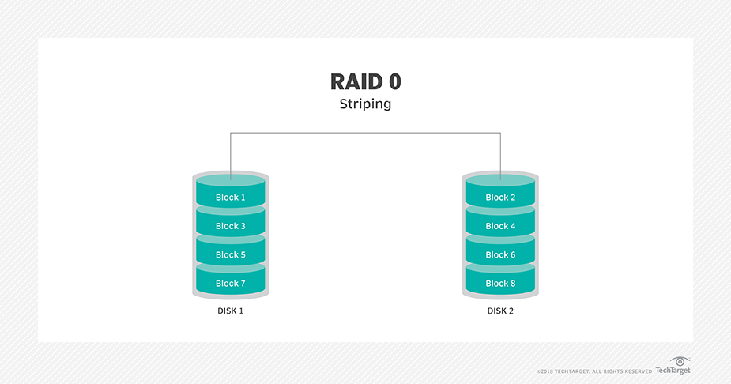
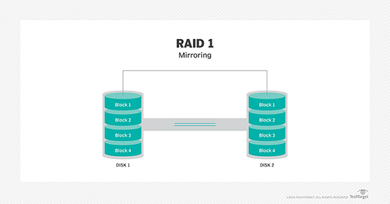
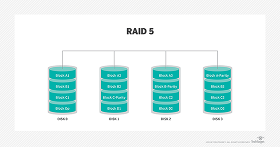

RAID Data Resiliency
- RAID-0 
- RAID-1 
- RAID-5 
- RAID-6
- RAID-10


Use standard naming conventions
{{Data Sovereignty}}:
Regulatory compliance applies to both active and backup data. Know the laws for your storage site.
Defines who has access to the data
Containters vs Virtualization
The CompTIA answer is the Full backup + Differential is the fastest because you're only restoring the Full as a baseline and 1 change. Incremental backup represents 1:n.
A {{CASB}} is a tool that monitors traffic as it flows between a cloud service provider and your network. The CASB is used for ensuring that the security policies are followed and enforced, helping prevent things like unencrypted data from being sent to or stored on a cloud solution.
Hot/Cold Aisle

Note: iptables is a firewall management tool